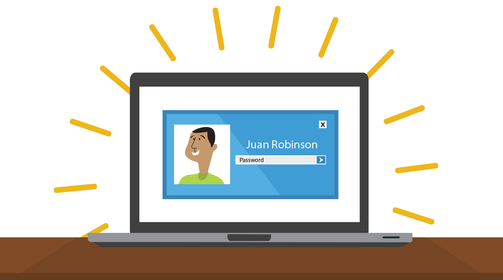
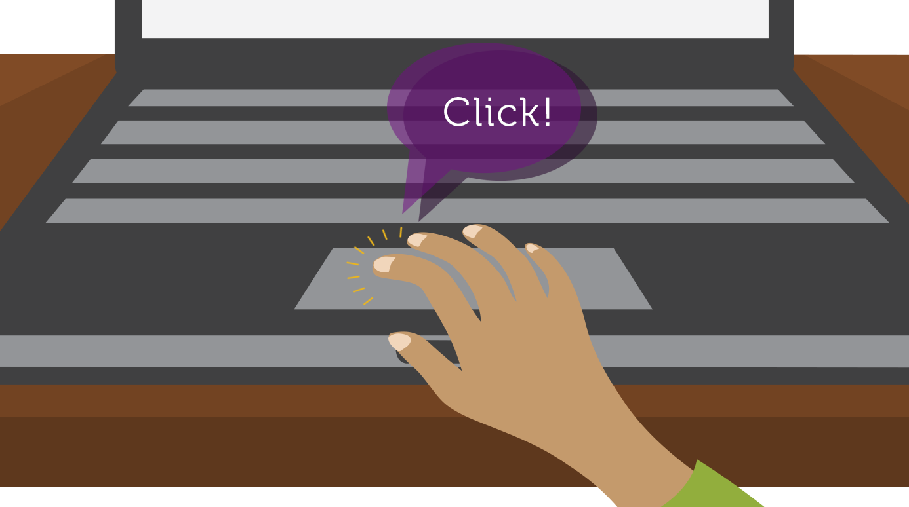

Computer Basics: Getting Started with Your First Computer
Getting started with your first computer
A computer is more than just another household appliance. The vast amount of information and possibilities can be overwhelming. But you can accomplish a lot with a computer, and using one can be a good experience. Let's walk through getting started with your first computer.
Note: Turning on a computer for the first time can be different from one computer to the next. Your experience could be different from this lesson. It's OK to ask someone for help.
If you're using a desktop computer, you'll need to make sure that the keyboard, mouse, and monitor are plugged into the computer case before you continue. Review our lesson on Setting Up a Computer to learn how.
Turning on a computer
The very first step is to turn on the computer. To do this, locate and press the power button. It's in a different place on every computer, but it will have the universal power button symbol (shown below).

Once turned on, your computer takes time before it's ready to use. You may see a few different displays flash on the screen. This process is called booting up, and it can take anywhere from 15 seconds to several minutes.
Once the computer has booted up, it may be ready to use, or it may require you to log in. This means identifying yourself by typing your user name or selecting your profile, then typing your password. If you've never logged in to your computer before, you may need to create an account.
The keyboard and mouse
You interact with a computer mainly by using the keyboard and mouse, or a trackpad on laptops. Learning to use these devices is essential to learning to use a computer. Most people find it comfortable to place the keyboard on the desk directly in front of them and the mouse to one side of the keyboard.

The mouse controls the pointer on the screen. Whenever you move the mouse across the desk, the pointer will move in a similar manner. A mouse usually has two buttons, which are referred to as the left button and the right button. You will often interact with the computer by moving the mouse pointer over something on the computer screen, then clicking one of the buttons.
On laptops, you can use the trackpad, located below the keyboard, instead of a mouse. Simply drag your finger across the trackpad to move the pointer on the screen. Some trackpads do not have buttons, so you'll either press or tap the trackpad to click.
The keyboard allows you to type letters, numbers, and words into the computer. Whenever you see a flashing vertical line—called the cursor—you can start typing.
Note: Note that the mouse pointer is also called a cursor, but it is shaped differently. The is also called the insertion point.
Using a computer
The main screen you'll start from is the desktop. This is sort of like a main menu or a table of contents. From here, you can access the programs and features you need to use your computer.
Icons are used to represent the different files, applications, and commands on your computer. An icon is a small image that's intended to give you an idea at a glance of what it represents, like a logo. Double-clicking an icon on the desktop will open that application or file.
A button is a command that performs a specific function within an application. The most commonly used commands in a program will be represented by buttons.
Menus are organized collections of commands and shortcuts. Click a menu to open it and display the commands and shortcuts within. Then click an item in the menu to execute it.
When you open an application or folder, it is displayed in its own window. A window is a contained area—like a picture within a picture—with its own menus and buttons specific to that program. You can rearrange multiple windows on the desktop and switch between them.
What's next?
OK, so these are just the basics of using a computer. In the next lesson, we'll talk about how to use your computer's specific operating system.